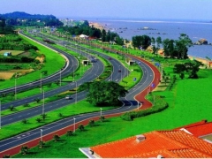

厦门[切换城市]
搜索
热门搜索：
爬山
农家乐 休闲去处 公园 温泉 休闲去处 公园 温泉
今天是：2012年12月14日 星期五
·设为首页 ·加入收藏
首页
周边景点
发现好去处
游记攻略
景点点评
线路点评
活动专题
论坛
[
登录
] [免费注册]
厦门周边旅游景点
厦门周边旅游景点大全，推荐当季最佳最受欢迎的旅游景点，还有适合周末休闲的好去处。
推荐分类
厦门周边一日游 厦门周边农家乐 厦门有什么好玩的地方
金榜钓矶、观三角梅园、体验怪坡之旅
8.8分
写游记
写评点
发照片
主页
线路点评
线路相册
景点相册
行程特色
游记
风土人情
天气预报
当地美食

单价：
免费
往返交通：自驾车/公交车
出发日期：12月23日
出发城市：厦门
电话：暂无
参与人数共：0人.
历次参与活动总人数:1253人.
活动流程
第1天苏州
07：00
指定地点集合上车赴普陀山。
11：50
（参考时间）抵达朱家尖蜈蚣峙码头，导游在蜈蚣峙码头接车，安排您乘快艇或班船到普陀山。
12：00
（参考时间）用中餐(敬请自理)。
13：30
游览普陀山最大的寺庙—【紫竹林】（香花券自理5元/人）：毗卢观音像、千手千眼观音；14：30游览【南海观音】（ 香花券自理6元/人）：潮音洞、不肯去观音院，【百步沙景区】 自由活动。
普济寺
普济寺又名"前寺"，位于浙江省普陀山白华顶南、岭鹫峰下，是国务院确定的汉族地区全国重。其前身是有名的"不肯去观音院"。普济寺占地三万七千多平方米，共有十殿、十二楼、七堂、七轩计231间，建筑面积1 1400平方米。
普济寺
普济寺
显示全部
费用明细
费用包括
1.交通：往返旅游巴士。
2.小交通：景区内用车（景区3次用车，普陀山往返朱家尖班船或快艇）。
3.住宿：农家宾馆2-3人间1晚。
4.门票：行程中所含的景点首道大门票，普陀山进山门票。
5.导服：当地中文导游。
6.儿童价标准：身高0.0~1.4米（含），不占床，只含上海-朱家尖的往返车票，其余自理。
7.其他：身高1.1m以下儿童可免车票，但需在报名时特别报备儿童数，如未报备，出游被交管查出，责任自行承担。
费用包括
自费项目名称
参考价格
详情/备注
索道
50元/人
往返
索道
50元/人
往返
索道
50元/人
往返
备注：所有自费项目均是推荐或建议性项目，客人应本着"自愿自费"的原则酌情参加，导游组织自费活动将不会带有任何强迫因素。部分项目参加人数不足时，则费用将做相应调整或无法成行。
显示全部
行程特色
车辆在此加水，休息。可自由活动或自由选购。该特产店主营海鲜干货等特产品，另有个体销售玉器店铺，该玉器店不在中天特产城营范围内，请您谨慎购买。
显示全部
友情提示
车辆在此加水，休息。可自由活动或自由选购。该特产店主营海鲜干货等特产品，另有个体销售玉器店铺，该玉器店不在中天特产城营范围内，请您谨慎购买。
显示全部
金榜钓矶、观三角梅园、体验怪坡之旅的图片
(全部32 | 我来发图片 )
普济寺
小虾米 发表于 2012-12-21
普济寺
小虾米 发表于 2012-12-21
普济寺
小虾米 发表于 2012-12-21
普济寺
小虾米 发表于 2012-12-21
显示全部
游记攻略
写游记
厦门玩CS的地方大全
小虾米 发表于 2012-12-21
东辉大峡谷在集美灌口镇东辉村，是一处未人工开发的宝地，这山谷里有野猪有野鹿，是一处未人工开发的宝地是一处未人工开发的宝地是一处未人工开发的宝地是一处未人工开发的宝地是发的宝地是一...
.[显示全文]
加颗钻石
1
添加回应
厦门玩CS的地方大全
小虾米 发表于 2012-12-21
东辉大峡谷在集美灌口镇东辉村，是一处未人工开发的宝地，这山谷里有野猪有野鹿，是一处未人工开发的宝地是一处未人工开发的宝地是一处未人工开发的宝地是一处未人工开发的宝地是发的宝地是一...
.[显示全文]
加颗钻石
1
添加回应
显示全部
风土人情
民俗－婚嫁
小虾米 发表于 2012-12-21
东辉大峡谷在集美灌口镇东辉村，是一处未人工开发的宝地，这山谷里有野猪有野鹿，是一处未人工开发的宝地是一处未人工开发的宝地是一处未人工开发的宝地是一处未人工开发的在集美灌口镇东辉村，是一处未人工开发的宝地，这山谷里有野猪有野鹿，是一处未人工开发的宝地是一处未人工开发的宝地是一处未人工开发的宝地是一处未人工开发的在集美灌口镇东辉村，是一处未人工开发的宝地，这山谷里有野猪有野鹿，是一处未人工开发的宝地是一处未人工开发的宝地是一处未...
.[显示全文]
加颗钻石
1
添加回应
显示全部
点评
周洋霆
点评
东辉大峡谷
6小时以前
鸿山公园是厦门岛内为数不多的山地公园，由"鸿山公园"、"延平郡王园"、"双忠魂"、"郡王池组成，面积显得比较大。从镇海路那边上去，有专门的登山道。第一次爬上去，由于公园登山的岔道比较多，很容易让人摸不着那条去顶峰的。当然，最后在那里墨迹了十几分钟，总算到上面去。山顶上有很多岩石洞，都有过烧烤的痕迹，估计都是驴友们的杰作。站在站岩石上，可以俯瞰厦门大学，轮渡，鼓浪屿方向的景色，可惜的是，太多的高楼大厦，都挡住了一些视野。
1
添加回应
周洋霆
点评
东辉大峡谷
6小时以前
鸿山公园是厦门岛内为数不多的山地公园，由"鸿山公园"、"延平郡王园"、"双忠魂"、"郡王池组成，面积显得比较大。从镇海路那边上去，有专门的登山道。第一次爬上去，由于公园登山的岔道比较多，很容易让人摸不着那条去顶峰的。当然，最后在那里墨迹了十几分钟，总算到上面去。山顶上有很多岩石洞，都有过烧烤的痕迹，估计都是驴友们的杰作。站在站岩石上，可以俯瞰厦门大学，轮渡，鼓浪屿方向的景色，可惜的是，太多的高楼大厦，都挡住了一些视野。
1
添加回应
显示全部
地图位置
查看完整地图
友情提示
·环岛路上的有住宿旅馆吗
·环岛路上的有住宿旅馆吗
·环岛路上的有住宿旅馆吗
·环岛路上的有住宿旅馆吗
·环岛路上的有住宿旅馆吗
·环岛路上的有住宿旅馆吗
问答
·环岛路上的有住宿旅馆吗
·环岛路上的有住宿旅馆吗
·环岛路上的有住宿旅馆吗
·环岛路上的有住宿旅馆吗
·环岛路上的有住宿旅馆吗
·环岛路上的有住宿旅馆吗
关于我们 | 联系方式 | 友情链接 | 问题反馈 | 添加景点
Copyright©2012 哪里玩(www.narwan.com) 闽ICP备10016424号